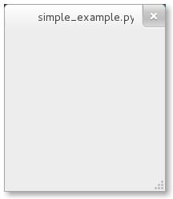

从零开始¶
最简单的例子¶
好吧，我们以创建最简单的例子来开始我们的教程。运行这个程序就会创建一个空的200x200的窗口，如图：我反正是真的运行了。
1 2 3 4 5 6 7 | #!/usr/bin/python
from gi.repository import Gtk
win = Gtk.Window()
win.connect("delete-event", Gtk.main_quit)
win.show_all()
Gtk.main()
|
现在我们开始逐行讲解这个例子。（呃，要不要这样啊。。。。）
#!/usr/bin/python
首行，以 #!开头，后面跟着你想要调用的Python解释器的路径。
from gi.repository import Gtk
要访问GTK+的类和函数，你必须首先导入Gtk模块。下一行创建了一个空的窗口。
win = Gtk.Window()
接下来连接窗口的delete-event以保证当我们点击x来关闭窗口时能够关闭这个程序。
win.connect("delete-event", Gtk.main_quit)
下一步我们显示了这个窗口。
win.show_all()
最后，我们开始了GTK+的处理循环，这个循环在我们关闭窗口时才会退出（详情见代码第五行的事件连接）。
Gtk.main()
要运行这个程序，直接在终端:
python simple_example.py
扩展的例子¶
让事情变得稍微有那么点儿意义吧, PyGObject版本的 “Hello World” 程序。
1 2 3 4 5 6 7 8 9 10 11 12 13 14 15 16 17 18 19 | #!/usr/bin/python
from gi.repository import Gtk
class MyWindow(Gtk.Window):
def __init__(self):
Gtk.Window.__init__(self, title="Hello World")
self.button = Gtk.Button(label="Click Here")
self.button.connect("clicked", self.on_button_clicked)
self.add(self.button)
def on_button_clicked(self, widget):
print "Hello World"
win = MyWindow()
win.connect("delete-event", Gtk.main_quit)
win.show_all()
Gtk.main()
|
这个例子与上一个例子的不同在于我们子类化了 Gtk.Window 来定义我们自己的 MyWindow 类。
class MyWindow(Gtk.Window):
在我们的类的构造函数中我们必须要调用父类的构造函数。另外，我们告诉它设置 title 属性的值为 Hello World 。
Gtk.Window.__init__(self, title="Hello World")
接下来的三行我们创建了一个按钮控件，连接了其 clicked 信号，然后将其添加为顶层窗口的孩子。
self.button = Gtk.Button(label="Click Here")
self.button.connect("clicked", self.on_button_clicked)
self.add(self.button)
如上，如果你点击了这个按钮，on_button_clicked() 方法就会被调用。
def on_button_clicked(self, widget):
print "Hello World"
最后面在类外面这一段，与上面那个例子很类似，但我们没有创建:class:Gtk.Window 类的实例，
而是创建了我们的 MyWindow 类的实例。